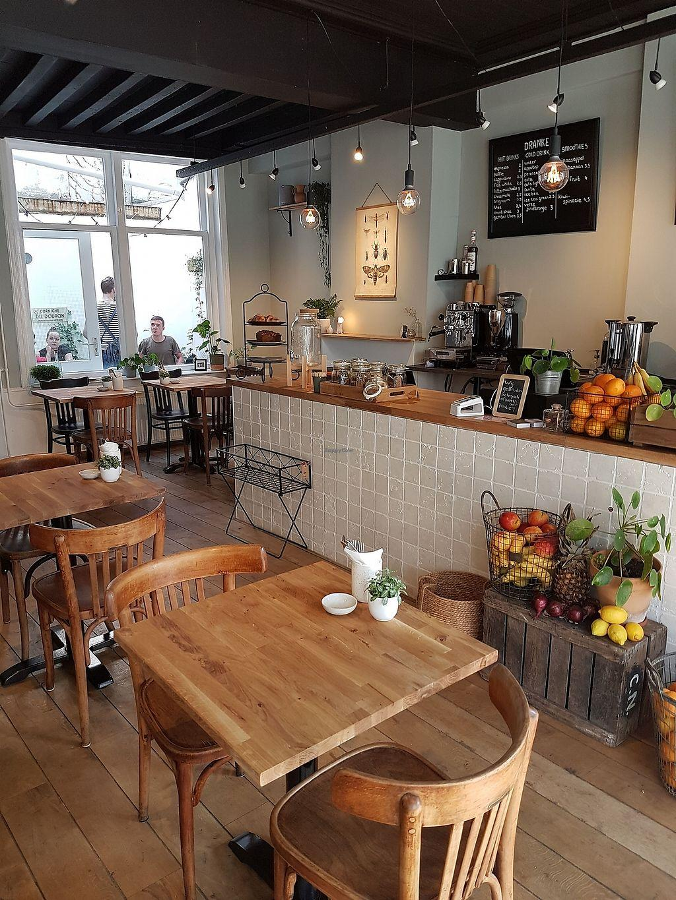

Bienvenido a NUMOKA
Un espacio creado para disfrutar de una buena bebida, algo delicioso y momentos especiales.
Conoce NUMOKA
NUMOKA es una cafetería que busca crear una experiencia cálida y relajada para compartir, estudiar o simplemente disfrutar el momento.

Nuestra experiencia
En NUMOKA queremos que cada visita sea un momento para disfrutar una buena bebida, probar algo delicioso y desconectarse de la rutina.
Nuestro espacio está pensado para estudiar, trabajar, conversar con amigos o simplemente disfrutar de un momento tranquilo.
Contáctanos
¿Tienes alguna pregunta o quieres conocer más sobre NUMOKA? Escríbenos.